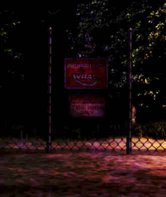

The Watersill Research for Artificial Life (or WRAL), colloquially known as the Data Exclusion Zone, is a highly classified, heavily fortified research institute and data center located in a remote forest near the city of Watersill, hidden away from the public eye. Those who venture within the parameters will be executed on the spot due to the facility containing highly sensitive material that can end humanity in the wrong hands.
First established in the mid 1980s, the WRAL is where many experiments were held to create artificial life. The facility came under fire in the late 2000s after its first successful creation was let loose into the world. Agents would spend years attempting to find it, but to no avail. They would discontinue the project just three years later, despite still roaming freely. The industry disbanded in the late 2010s, with the source code for many of their projects, particularly their first successful one, being leaked to the internet for anyone to use. However, modern computers aren't able to process the exotic code, causing their motherboards to fry and sometimes explode.
The WRAL is one of the few places that remains unaffected by The Great Siphoning due to the architecture not being made of biowaste. Though, due to nobody being around to survey the area, the systems began overheating, leading plastics to melt, and electrical fires that quickly engulfed the data center. And due to being embedded within a forest, the fires could spread for miles.
